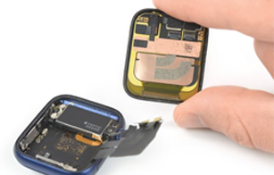
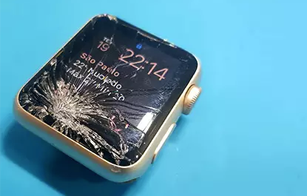
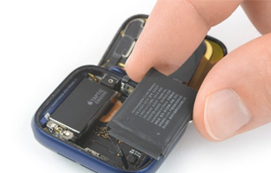
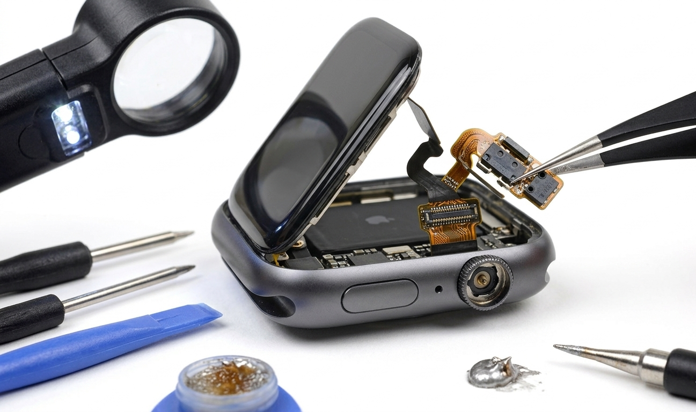
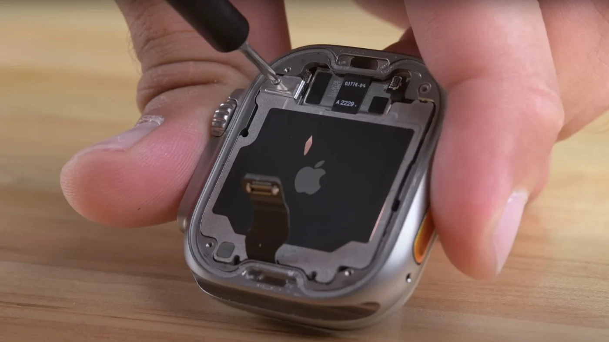
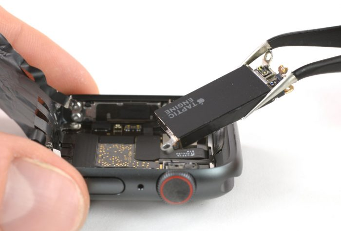
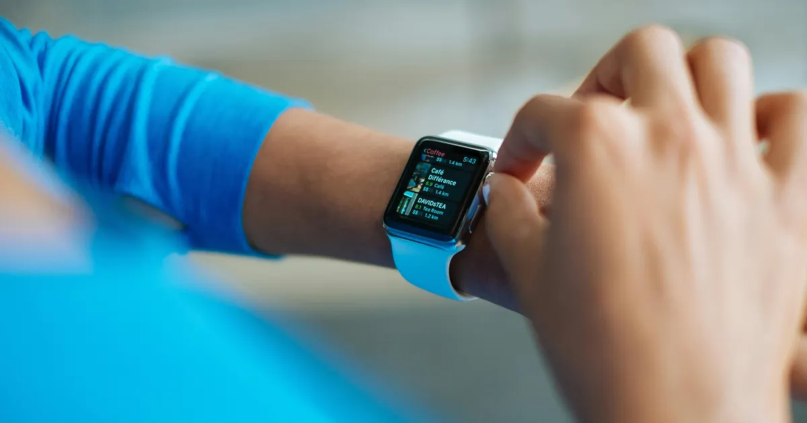

Serviços especializados
Serviços em Apple Watch

Substituição de Tela
Substituímos a tela completa do seu Apple Watch de todas as séries.

Substituição do Vidro / Touch
Substituímos apenas o vidro/touch mantendo o display original intacto.

Substituição de Bateria
Substituímos a bateria do seu Apple Watch para restaurar a autonomia original.

Reparo da Coroa Digital
Coroa digital travada ou sem resposta? Realizamos o reparo completo.

Reparo de Alto-falante
Som baixo ou sem áudio? Reparamos o alto-falante do seu Apple Watch.

Reparo de Microfone
Microfone não funciona? Fazemos o reparo completo do seu Apple Watch.

Diagnóstico Completo do Sistema
Diagnóstico completo para identificar qualquer problema no seu Apple Watch.
Seu Apple Watch precisa de reparo?
Diagnóstico gratuito, atendimento personalizado e garantia de 1 ano.
Agendar atendimento